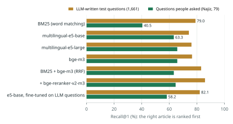
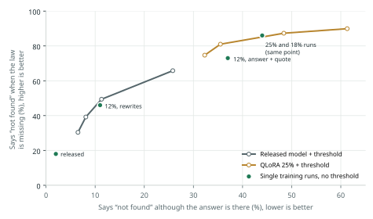
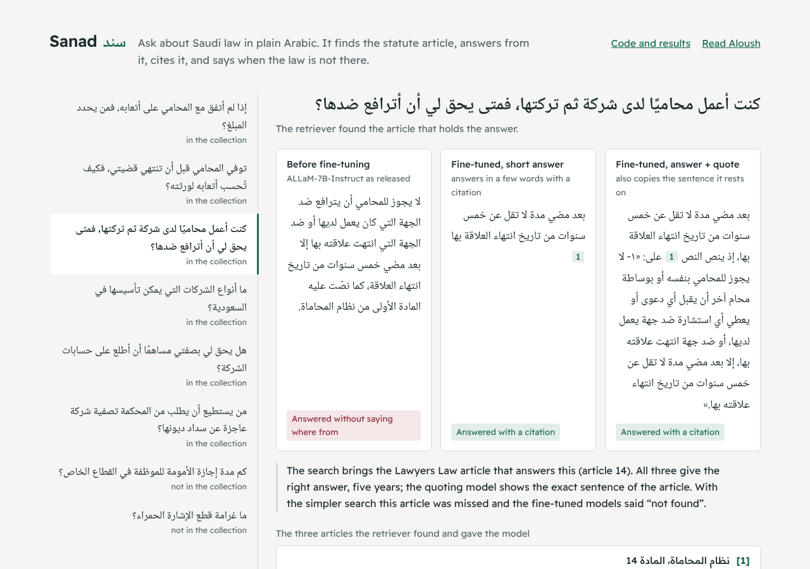

Technical report · Read Aloush · November 2026
Grounded question answering over Saudi law in Arabic, and what LLM-written benchmarks hide
Sanad answers questions about Saudi law in Arabic from the text of the statutes: it retrieves the relevant articles, answers from them with a numbered citation, and says so when the answer is not in what it was given. I compare lexical, dense, hybrid and reranked retrieval on a 5,929-passage corpus, fine-tune the retriever, and fine-tune ALLaM-7B-Instruct with QLoRA to cite and to abstain. Every result is reported on two test sets: 1,661 questions an LLM wrote while reading the passage (ArabLegalEval) and 79 questions people asked (Najiz QA).
The two disagree at every stage. On LLM-written questions, word matching beats every embedding model and fine-tuning raises Recall@1 from 74.2% to 82.1%; on human questions the same fine-tuning lowers Recall@5 from 86.1% to 70.9%. Fine-tuning the answering model raises correct citations from 27% to 93% on the benchmark, but how often it refuses on human questions swings between 11% and 44% across training runs, including two runs with the same setting. A refusal threshold tuned on LLM-written questions does not transfer either. The conclusion is that a few hundred real questions, not a larger model, are what this kind of system needs next.
Someone with a question about Saudi law usually asks it the way they would ask a friend: إذا لم أتفق مع المحامي على أتعابه، فمن يحدد المبلغ؟ (“If I didn’t agree a fee with my lawyer, who sets the amount?”). The answer sits in one article of one statute, written in formal legal Arabic. A general chatbot will answer anyway, without saying where the answer comes from, and will answer just as confidently when it does not know. For legal questions both failures matter more than fluency.
Sanad is built around two requirements: every answer names the article it rests on, and when the retrieved articles do not contain the answer, the system says «لا أجد الإجابة في النصوص المتاحة» (“I can’t find the answer in the available texts”) instead of guessing. The project measures how well each part meets these requirements, on questions written by a model and on questions written by people.
Figure 1. The pipeline. The retriever ranks every statute passage against the question; the three best go to the language model in a fixed prompt; the model answers only from them, cites the passage number, or says the fixed “not found” sentence.
After normalising and deduplicating, the corpus has 5,929 passages. Questions are split 70/15/15 by the passage they were written from, so a passage never answers both a training and a test question. The passages behind the Najiz questions are forced into the test split, and any training pair that touches a held-out passage is dropped (4,816 of 10,608 ALARB fact-to-article pairs). The resulting sets are 7,325 training, 1,597 development and 1,661 test questions.
The ArabLegalEval questions were written by a model looking at the passage, so they reuse its words. This is the central caveat of the study, and it is why Najiz is reported next to every result even though 79 questions is small: one question is 1.3 percentage points.
Arabic text is normalised (diacritics and tatweel removed, alef forms unified, ى→ي, ة→ه, Arabic-Indic digits converted) and, for BM25, lightly stemmed by stripping article and conjunction prefixes such as وال، بال، لل. Dense retrievers use their documented prefixes (query: / passage: for e5). Hybrid retrieval fuses BM25 and bge-m3 rankings with reciprocal rank fusion [3]; the reranker is bge-reranker-v2-m3 over the fused top 20.

Figure 2. Recall@1 for each retriever on the two test sets. Word matching (BM25) is the best single retriever on LLM-written questions and the worst on human ones; fine-tuning on LLM-written questions moves the two in opposite directions.
| Retriever | Test R@1 | R@10 | MRR@10 | Najiz R@1 | R@10 | MRR@10 | ms/query |
|---|---|---|---|---|---|---|---|
| BM25, normalised and stemmed | 79.0 | 94.6 | .847 | 40.5 | 70.9 | .497 | 10.0 |
| multilingual-e5-base [4] | 74.2 | 94.3 | .815 | 63.3 | 87.3 | .715 | 0.5 |
| multilingual-e5-large | 76.1 | 95.5 | .830 | 65.8 | 91.1 | .741 | 1.3 |
| bge-m3 [5] | 76.5 | 95.4 | .836 | 65.8 | 89.9 | .745 | 1.3 |
| BM25 + bge-m3 (RRF) | 83.1 | 97.2 | .883 | 63.3 | 79.7 | .681 | |
| the same + bge-reranker-v2-m3 | 85.9 | 98.4 | .909 | 64.6 | 93.7 | .740 |
Table 1. Retrieval over 5,929 passages. Timings per query on a Kaggle T4 with the corpus already encoded.
On human questions BM25 falls to 40.5% while the embedding models reach 63–66%, and fusing BM25 in costs 8–10 points of Recall@10, which the reranker wins back. The differences between embedding models on Najiz are one or two questions and not meaningful. multilingual-e5-base was kept for the experiments that follow: on human questions it is within two questions of the larger models at a third of the parameters and less than half the latency.
| Training data | Test R@1 / R@5 / R@10 / MRR | Najiz R@1 / R@5 / R@10 / MRR |
|---|---|---|
| none (starting model) | 74.2 / 91.0 / 94.3 / .815 | 63.3 / 86.1 / 87.3 / .715 |
| ArabLegalEval training questions (7,325) | 82.1 / 95.1 / 97.4 / .876 | 58.2 / 70.9 / 81.0 / .648 |
| the same + ALARB case facts → cited article | 80.5 / 94.1 / 96.9 / .865 | 59.5 / 67.1 / 78.5 / .635 |
| 2,400 questions, original wording | 76.1 / 91.0 / 94.6 / .826 | 54.4 / 72.2 / 78.5 / .622 |
| the same 2,400, rewritten in plain language | 73.8 / 89.5 / 92.9 / .806 | 55.7 / 73.4 / 77.2 / .628 |
| both wordings (4,796 pairs) | 77.3 / 93.0 / 96.0 / .840 | 59.5 / 73.4 / 81.0 / .660 |
Table 2. Retriever fine-tuning, dense retrieval only. Every fine-tuned model loses at least 12 points of Recall@5 on human questions.
Fine-tuning gains eight points of Recall@1 on questions like the training ones and loses on the questions people asked: Recall@5 falls from 86.1% to 70.9%, twelve of 79 questions. Model selection by development MRR picks the fine-tuned model, because the development set is LLM-written too; a pipeline that only looked at its own benchmark would ship the worse retriever. Rewriting the training questions in plain language (Section 8) does not fix this: the question–passage pairs are still the ones a model chose, so the retriever learns the benchmark rather than the people. The experiments keep the starting e5-base model.
Two openly licensed 7B instruction models were compared, both loaded in 4-bit NF4 on one T4: ALLaM-7B-Instruct [6], trained by SDAIA with a large Arabic share, and Qwen2.5-7B-Instruct [7]. Each sees the top three retrieved passages, numbered, under a system prompt that asks for a one- or two-sentence answer with the passage number in brackets, and for the fixed “not found” sentence otherwise.
| Model | Closed book | Retrieved top 3 | Gold passage |
|---|---|---|---|
| ALLaM-7B-Instruct | 67.3 | 93.5 | 97.8 |
| Qwen2.5-7B-Instruct | 65.8 | 93.5 | 97.8 |
| ALLaM + QLoRA, 25% abstention examples | 67.0 | 96.5 | 98.8 |
| ALLaM + QLoRA, plain-language rewrites, 12% | 68.8 | 95.0 | 99.0 |
Table 3. Multiple-choice accuracy (%) on 400 test questions, read from the next-token probabilities of the letters A–D. The gold passage is among the top three retrieved for 87% of them.
Retrieval is worth 26 points. Fine-tuning does not add legal knowledge (closed book is unchanged) but makes better use of the passages provided. On the development set ALLaM led Qwen with retrieved passages (94.0% against 92.0%), so ALLaM was chosen for fine-tuning.
For free-form answers four things are measured: whether the answer cites the gold passage; whether the model wrongly says “not found” although the gold passage is in its context; whether it says “not found” when the gold passage has been removed (the same question, now unanswerable from what it sees); and token F1 against the reference answer, with citations stripped.
| Model | Set | Cites gold | "Not found" when law is missing | False "not found" | Answer F1 |
|---|---|---|---|---|---|
| ALLaM-7B-Instruct | test | 27% | 16% | 0% | 0.42 |
| Qwen2.5-7B-Instruct | test | 90% | 46% | 1% | 0.44 |
| ALLaM + QLoRA, p = 0.25 | test | 93% | 84% | 7% | 0.80 |
| ALLaM-7B-Instruct | Najiz | 26% | 18% | 2% | 0.46 |
| Qwen2.5-7B-Instruct | Najiz | 76% | 33% | 3% | 0.43 |
| ALLaM + QLoRA, p = 0.25 | Najiz | 55% | 86% | 44% | 0.47 |
Table 4. Grounded answers on 150 test questions (135 with the gold passage in the top 3) and the 79 Najiz questions (62 with it in the top 3). The unanswerable versions use all questions.
Before fine-tuning, ALLaM answered 84% of test questions whose law it had not been given and cited the right passage only 27% of the time. Fine-tuning fixes both on LLM-written questions: 93% correct citations, 84% correct abstention, F1 from 0.42 to 0.80. On human questions it overcorrects and says “not found” for 44% of the questions whose answer is in front of it.
All training ran on free Kaggle T4 GPUs (16 GB), one notebook per step; Appendix A lists them. The settings below are the defaults in the code; every run uses one seed.
| Setting | Retriever (multilingual-e5-base) | Answering model (ALLaM-7B-Instruct) |
|---|---|---|
| Method | Full fine-tuning, sentence-transformers | QLoRA: 4-bit NF4 base, rank-16 adapters on every linear layer |
| Training data | question → gold passage, plus one mined hard negative | 1,600 examples: 3 retrieved passages + target answer |
| Loss | Cached multiple-negatives ranking (in-batch negatives) | Cross-entropy on the answer tokens only |
| Batch | 128 (mini-batch 16), no duplicate passages per batch | 1 sequence, gradient accumulation 8 |
| Learning rate | 2·10−5, 10% warm-up | 2·10−4, cosine, 5% warm-up, AdamW, grad-norm clip 1.0 |
| Epochs / time | 2 epochs, 3–10 minutes | 1 epoch (200 steps), about 45–50 minutes |
| Trainable parameters | 278 M (all) | 40 M of 7.04 B (0.57%) |
| Precision | fp16 mixed precision | fp16 autocast with gradient scaling, gradient checkpointing |
Table 5. Training settings. Model selection for the retriever uses development-set MRR, which, as Section 5 shows, favours the wrong model.
Each training pair is a question and the passage it was written from. The loss treats every other passage in the batch as a negative, so a large batch gives many negatives cheaply; the cached variant computes the large batch in mini-batches to fit the GPU, and one mined hard negative per pair (a high-ranked wrong passage) makes the task harder than random negatives.
from sentence_transformers.losses import CachedMultipleNegativesRankingLoss from sentence_transformers.training_args import BatchSamplers ds = Dataset.from_dict({"anchor": questions, "positive": gold_passages, "negative": hard_negatives}) loss = CachedMultipleNegativesRankingLoss(model, mini_batch_size=16) args = SentenceTransformerTrainingArguments( num_train_epochs=2, per_device_train_batch_size=128, learning_rate=2e-5, warmup_ratio=0.1, fp16=True, batch_sampler=BatchSamplers.NO_DUPLICATES) # no passage twice in a batch SentenceTransformerTrainer(model=model, args=args, train_dataset=ds, loss=loss).train()
Listing 1. Retriever fine-tuning (sanad/finetune_retriever.py, shortened).
Each training example is a training question with its three retrieved passages. With probability p the gold passage is removed and the target is the fixed “not found” sentence; otherwise the gold passage is put into the context if the retriever missed it, and the target is the short answer followed by the passage number. No development, test or Najiz question or passage is used.
for q in questions: r = [p for p in ranked[q.qid] if p not in held_out or p == q.gold] if rng.random() < p_unanswerable: # the law is not in the context ctx = [p for p in r if p != q.gold][:3] target = ABSTAIN # «لا أجد الإجابة في النصوص المتاحة.» else: # the law is there: answer and cite ctx = r[:3] if q.gold not in ctx: ctx[rng.randrange(3)] = q.gold target = f"{q.answer} [{ctx.index(q.gold) + 1}]" examples.append((rag_messages(q.text, [text[p] for p in ctx]), target))
Listing 2. Building the fine-tuning examples (sanad/sft.py, shortened).
model = AutoModelForCausalLM.from_pretrained("ALLaM-AI/ALLaM-7B-Instruct-preview", quantization_config=BitsAndBytesConfig(load_in_4bit=True, bnb_4bit_quant_type="nf4", bnb_4bit_compute_dtype=torch.float16, bnb_4bit_use_double_quant=True)) model = prepare_model_for_kbit_training(model, use_gradient_checkpointing=True) linear = {n.split(".")[-1] for n, m in model.named_modules() if isinstance(m, torch.nn.Linear)} - {"lm_head"} model = get_peft_model(model, LoraConfig(r=16, lora_alpha=32, lora_dropout=0.05, task_type="CAUSAL_LM", target_modules=sorted(linear))) # trainable params: 39,976,960 || all params: 7,040,536,576 || trainable%: 0.5678 with torch.autocast("cuda", dtype=torch.float16): loss = model(input_ids=x, labels=y).loss / accum # labels = -100 on the prompt tokens scaler.scale(loss).backward()
Listing 3. QLoRA set-up and the training step. A plain PyTorch loop with gradient scaling, accumulation and clipping, rather than a trainer class, kept memory predictable on a 16 GB GPU.
To test whether the overcorrection came from wording, Qwen2.5-7B-Instruct rewrote 2,400 training questions in the style of a non-lawyer, seeing only the question and never the passage; 2,396 rewrites were usable. ALLaM was then fine-tuned on the rewrites with 12% “not found” examples, and again with 18%, and later, with 12% again, trained to quote its source (Section 9).
| Abstention examples, training questions | Set | Cites gold | "Not found" when law is missing | False "not found" | Answer F1 |
|---|---|---|---|---|---|
| 25%, original wording | Najiz | 55% | 86% | 44% | 0.47 |
| 12%, plain-language rewrites | Najiz | 77% | 46% | 11% | 0.37 |
| 18%, plain-language rewrites | Najiz | 56% | 86% | 44% | 0.44 |
| 25%, original wording | test | 93% | 84% | 7% | 0.80 |
| 12%, plain-language rewrites | test | 96% | 40% | 2% | 0.81 |
| 18%, plain-language rewrites | test | 90% | 65% | 5% | 0.82 |
| 12%, answer + quote | Najiz | 56% | 73% | 37% | 0.47 |
| 12%, answer + quote | test | 92% | 68% | 7% | 0.31 |
Table 6. The share of “not found” examples in training. Every row is one training run.
The 12% run cut false “not found” on human questions to 11% and raised correct citations to 77%. The 18% run landed exactly where the 25% run did, so the wording was not what helped. Then a second 12% run, which changed only the form of the answer, refused 37% of answerable human questions. With one run per setting the share of “not found” examples looks like a dial; with two runs at the same setting it looks like noise. Retraining is not a reliable way to choose this behaviour.
The alternative leaves the trained model alone and decides afterwards. For each question the model’s log-probability of the “not found” sentence is a score; above a threshold, the system refuses. Figure 3 places every run and every threshold on the same trade-off.

Figure 3. On the 79 human questions: wrongly refusing (x, lower is better) against correctly refusing when the law is missing (y, higher is better). The ideal is the top-left corner. Green dots are single training runs; lines are thresholds on two models, chosen on LLM-written development questions.
| Model | AUC dev | AUC test | AUC Najiz | Test at 2% dev target | Najiz at 2% dev target |
|---|---|---|---|---|---|
| ALLaM, as released | 0.78 | 0.81 | 0.78 | 0.7% / 22% | 6.5% / 30% |
| QLoRA, 25%, original wording | 0.93 | 0.95 | 0.81 | 2.2% / 77% | 32.3% / 75% |
| QLoRA, 12%, rewrites | 0.89 | 0.89 | 0.79 | 5.2% / 59% | 32.3% / 71% |
| QLoRA, 18%, rewrites | 0.89 | 0.89 | 0.81 | 5.2% / 65% | 50.0% / 90% |
Table 7. AUC is the chance that an unanswerable question scores above an answerable one. Right columns: false “not found” / “not found” when the law is missing, with the threshold set on 150 development questions for 2% false “not found”.
tail = tok(ABSTAIN, add_special_tokens=False)["input_ids"] # the "not found" sentence ids = torch.cat([prompt_ids, torch.tensor([tail] * n)], 1) logits = model(input_ids=ids, attention_mask=mask).logits[:, -len(tail) - 1:-1, :] score = torch.log_softmax(logits.float(), -1).gather(2, ids[:, -len(tail):, None]).mean((1, 2))
Listing 4. The “not found” score: the mean log-probability of the fixed sentence, teacher-forced after the prompt (sanad/abstain_curve.py).
Fine-tuning makes the model much better at telling when the answer is missing on questions like its training data (AUC 0.81 → 0.95) and barely better on questions people asked (0.78 → 0.81, within the noise of 79 questions). A threshold chosen on LLM-written questions does not carry over: 2% false “not found” on test becomes 32% on Najiz. The released model with a threshold reaches about the same point on human questions as the best fine-tuned run, with no training at all.
One caveat applies to every “says not found when the law is missing” figure. Passages overlap, so when the gold passage is removed a neighbouring one sometimes still contains the answer; some answers counted as failures to refuse are correct. The figure is a lower bound.
The public demo answers eight plain-language questions over the 717 ALARB articles. With e5-base alone, the article that answers the question came back for only three of the six questions whose law is in the collection, and the fine-tuned models then said “not found”, correctly for what they were given. Regenerating the demo with the best search from Section 4 (BM25 and bge-m3 fused, then reranked) brought the right article for five of six.
The fine-tuned models answered in a few words (“the court [1]”) because the training targets were short. A second 12% run used targets made of the short answer followed by the sentence of the cited article it rests on, chosen automatically as the sentence sharing the most words with the answer and question. On the demo questions every quoted sentence is copied word for word from the cited article.

Figure 4. One demo question: “I worked as a lawyer for a company and left; when may I appear against it?” All three models answer five years. The released model attributes it to article 1, which is wrong; the short model cites [1]; the quoting model also shows the sentence of article 14 it rests on.
The quoting model is easier to trust when it answers, but it refused more often (Table 6, last rows). On the demo it said “not found” for two of the five questions whose article it had been given.
The service has no PyTorch dependency. The retriever is exported to ONNX with L2 normalisation built in and runs with ONNX Runtime and the tokenizers library; the 717 articles are embedded in advance. The language model is reached through any OpenAI-compatible endpoint (vLLM, llama.cpp or Ollama), so it can be swapped without changing the service. A FastAPI app exposes /search and /ask; /ask returns the answer, whether it is a “not found”, each source with its law, article number and score, which sources were cited, and any citation number that points at no source. A Docker image and tests with a tiny model and a fake LLM are included.
| Retriever on CPU | Test R@1 / R@5 / R@10 | Najiz R@1 / R@5 / R@10 | ms / passage |
|---|---|---|---|
| PyTorch float32, 512 tokens | 74.5 / 91.1 / 94.6 | 63.3 / 86.1 / 87.3 | 181 |
| PyTorch float32, 256 tokens | 74.7 / 91.0 / 94.5 | 63.3 / 87.3 / 88.6 | 166 |
| ONNX, default dynamic int8 (all ops, per tensor) | 69.2 / 87.5 / 92.2 | 50.6 / 73.4 / 81.0 | 354 |
Table 8. The cost of serving choices, on the full corpus on a Kaggle CPU. The float32 ONNX export gives exactly the PyTorch numbers.
Truncating inputs to 256 tokens costs nothing. Default dynamic int8 quantisation looked harmless by cosine similarity to the original embeddings (minimum 0.94 on 64 passages) but cost 13 points of Recall@1 on human questions and was slower on this CPU; quantising only the matrix multiplications with per-channel scales was worse still (43.0%). The service uses the float32 model. A cosine check is not a retrieval check.
ArabLegalEval [1] introduced the benchmark used here and evaluated LLMs on it, largely on multiple-choice, LLM-written questions. Several open projects apply retrieval-augmented generation to Saudi labour law, and commercial Saudi legal assistants exist. The contribution of this project is not the idea of a Saudi legal RAG system but the measurement: separating LLM-written from human-written questions at every stage, showing that the usual training and model-selection signals point the wrong way on the latter, and treating refusal as a measured behaviour rather than a prompt instruction.
A 7B Arabic model with a small retriever can answer questions about the Saudi statutes it is given with a correct citation most of the time, and 1,600 training examples are enough to teach it to cite and to refuse. The more useful lesson is about evaluation. Benchmarks written by a model from the source text reward word matching, and every improvement measured on them in this project (a fine-tuned retriever, hybrid retrieval, cheaper quantisation, refusal thresholds) either did not carry over to the questions people ask or made the system worse for them. A few dozen real questions changed every decision that mattered. The most valuable next step is not a larger model but a few hundred real questions, to choose the retriever, the refusal threshold and the training data against, and repeated training runs to tell a real gain from a lucky one.
Every number comes from a notebook in the repository, run on Kaggle (Internet on). The code is cloned fresh in each notebook, and the datasets are downloaded when it runs; nothing from ArabLegalEval is stored in the repository.
| Notebook | What it does | Hardware |
|---|---|---|
| 01_retrieval_baselines | BM25, e5, bge-m3, fusion and reranker (Table 1) | T4 |
| 02_finetune_retriever | Retriever fine-tuning recipes (Table 2) | T4 |
| 03_answering_model | ALLaM vs Qwen, first QLoRA run (Tables 3–4) | T4 |
| 04_plain_language | Question rewrites, retriever and 12% QLoRA run | T4 |
| 05_build_index | ONNX export and the served index | T4 |
| 06_not_found_dial | 18% QLoRA run and demo answers | T4 |
| 07_onnx_check | Serving cost: truncation, ONNX, int8 (Table 8) | CPU |
| 08_abstain_threshold | “Not found” scores, AUC and thresholds (Table 7) | T4 |
| 09_demo_rerank | Demo answers with BM25 + bge-m3 + reranker | T4 |
| 10_full_answers | Answer + quote QLoRA run | T4 |
Table 9. The notebooks, in order. Each writes its numbers to a JSON file and prints the tables shown in this report.